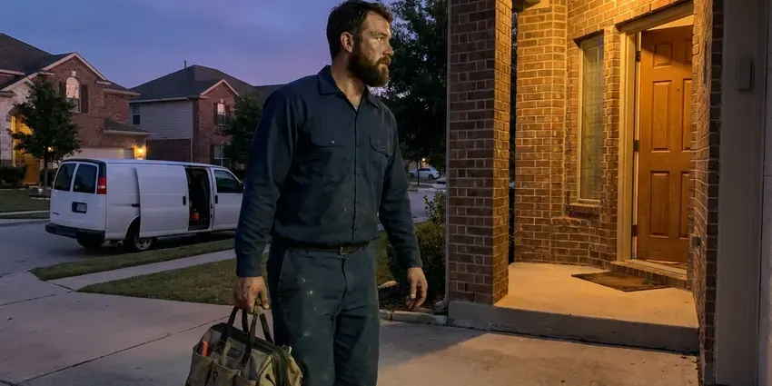

Gas Water Heater Repair in Moundsville, WV
For dependable gas water heater repair across Moundsville, WV, trust GJK Plumbing to diagnose and fix problems efficiently, so your home has consistent hot water.
- Fast, Local Service
- Licensed Technicians
- Quick Gas Heater Repair
- Guaranteed Work
Pilot will not stay lit? Get your gas water heater fixed in Moundsville, WV.
Don't shiver through another cold shower, contact GJK Plumbing for fast assistance.
Gas Water Heater Repair in Moundsville, WV for Pilots, Burners and Gas Valves
GJK Plumbing knows that most modern gas tanks use sealed combustion chambers with flammable vapor sensors that trip when dust and lint build up. Most garages collect a lot of both, and we clean and repair these systems so the pilot keeps burning.
Our expertise includes:
- Thermostat & Gas Valve Replacement
- Power vent blower, pressure switch and flue draft fixes
- Repairing gas valve and thermostat malfunctions

Additional Plumbing Repair Services in Moundsville, WV
We offer expert plumbing repair services across Moundsville, WV to stop leaks, clear blockages, and keep every fixture working the way it should.


Customers
Why Choose GJK Plumbing for Gas Water Heater Repair in Moundsville, WV?
Choosing the right plumber for gas water heater repair is important for your home's safety and comfort. Our team brings years of specialized experience to every job, delivering accurate diagnostics and lasting repairs.
- Safety First, Gas appliances need careful handling to prevent leaks and carbon monoxide exposure.
- Local Expertise, We know local Moundsville plumbing codes and typical issues affecting West Virginia water heaters.
- Gas Leak Testing, Every gas connection we touch is tested with an electronic detector and solution.
Citywide Coverage
From historic districts to new developments, our technicians are dispatched quickly across Moundsville to address your gas water heater issues. We make sure our service reach covers all corners of the community for prompt repairs.
Experienced Team
Our plumbing team has deep experience with gas water heater repair, having worked on countless models and brands over the years. This specialized knowledge allows us to quickly pinpoint issues and put effective solutions in place.
Safety-First Approach
We always conduct careful leak detection and operational checks after any gas water heater repair to confirm everything is functioning safely and efficiently. Your peace of mind is our top priority for every service call in Moundsville, WV.
Trusted Certified Moundsville Plumbing Services Professionals
At GJK Plumbing, we take pride in providing licensed, certified plumbing services throughout Moundsville, WV. Backed by recognized industry credentials, our experienced plumbers combine technical skill with genuine customer care. Whether it is repair, installation, or maintenance, we follow strict safety and quality standards to deliver long-lasting results you can trust.
Call Us Now PHCC Plumbing Contractor Recognition
PHCC Plumbing Contractor Recognition Better Business Bureau (BBB) Accreditation
Better Business Bureau (BBB) Accreditation Angi Certified Pro
Angi Certified Pro ISO 9001 Quality Management Certification
ISO 9001 Quality Management CertificationTrusted Gas Water Heater Repair Services in Moundsville, WV
Emergency Gas Water Heater Repair in Moundsville
When your gas water heater quits working, especially on a busy morning, it is an emergency. GJK Plumbing offers fast emergency repair services for gas water heaters in Moundsville. We prioritize urgent calls to get your hot water back quickly, knowing that a lack of hot water is more than just an inconvenience.

Gas Water Heater Noise Troubleshooting in Moundsville
Odd noises coming from your gas water heater, such as rumbling, popping or whistling, often indicate sediment buildup in the tank or a burner problem. Hard water can add to sediment accumulation. Our repair service includes flushing the tank and inspecting for sediment, addressing pressure issues or checking other components that might be causing the noise, improving efficiency and quiet operation.
Commercial Gas Water Heater Repair in Moundsville, WV
Businesses in Moundsville, WV depend on a constant supply of hot water for their operations. Our team is equipped to handle the larger, more complex gas water heater systems found in commercial settings. We understand the need for minimal downtime and provide efficient, durable repairs to keep your business running smoothly.
Tank Leaks and Pressure Problems in Moundsville
Even gas water heaters can develop tank leaks, often due to corrosion from hard water or high water pressure. Testing well water every year or so is a smart habit in West Virginia, especially after flooding or nearby ground disturbance. While some leaks might require a replacement, minor leaks or pressure relief valve issues can often be repaired. Our team assesses the extent of the damage, inspects the anode rod and addresses pressure imbalances to prevent further problems in your Moundsville home.
Restoring Hot Water for Older Homes in Moundsville
Many homes in Moundsville feature older gas water heater models that require specific knowledge for repair. Our technicians are familiar with the common issues and less common parts associated with these systems. We can troubleshoot and repair older units, often extending their lifespan, rather than pushing for immediate replacement. We focus on cost-effective repairs that respect the character of your home.
Water Heater Tank Leaks and Pressure Issues in Moundsville, WV
While gas water heaters are robust, tank leaks or pressure problems can occur. We can often fix small fitting leaks or replace relief valves if pressure is too high. If the tank itself is compromised due to rust or old age, a replacement might be the more economical long-term solution. We give you an honest assessment of the repair options for your Moundsville, WV home.
Propane Water Heater Repair in Moundsville
Rural properties often run water heaters on propane instead of natural gas. Propane units use different orifices and regulator pressures, and incorrect conversions cause sooting and poor performance. We confirm the correct parts are installed and repair pilots, valves and burners. We also check tank regulators for correct pressure.

Cost-Effective Gas Water Heater Solutions in Moundsville, WV
We always aim to provide the most cost-effective repair solution for your gas water heater in Moundsville, WV. We give transparent pricing before any work begins, so you know exactly what to expect. Sometimes a repair can extend the life of your unit significantly, while other times replacement is the more prudent financial decision. We help you make the best choice.
Gas Water Heater Repair Near Me in Moundsville, WV
Garages gather dust and lint that cause gas water heaters to shut down. Our team knows how to clean and protect these units in real-world conditions. That means fewer pilot outages following the repair.
Our team lives and works right here in the Moundsville area, giving us a solid understanding of the local plumbing landscape and quick access to your service needs. For dependable, prompt gas water heater repair, you don't need to look any further than GJK Plumbing.
GJK Plumbing at a Glance
- Fully licensed plumbing team covering Moundsville, WV
- Same-day appointments and 24/7 emergency response
- Clear written estimates, no hidden fees
- 4.8-star rated by 832+ West Virginia customers
Moundsville Map
Moundsville Information
- Population
- 7,724
- Area codes
- Local
- Service area
- Moundsville and communities within 40 miles
- Nearby
- Wheeling, New Martinsville, Weirton, Fairmont
Testing well water every year or so is a good habit in West Virginia, especially after flooding or nearby ground disturbance. A well-maintained gas water heater is important for steady hot water and for avoiding costly damage in Moundsville homes.
Expert Services
Trust our professionals for reliable GJK Plumbing solutions in Moundsville, WV.
Our Specialized Plumbing Services in Moundsville, WV
At GJK Plumbing, we provide a complete range of plumbing services across Moundsville, WV. From leak detection to full system installations, our team ensures fast, precise, and affordable service for both residential and commercial properties. Explore our core services below:


How Our Gas Water Heater Repair Process Works in Moundsville, WV
Our gas water heater repair process is designed for clarity, efficiency and minimal disruption to your Moundsville home. We aim to get your hot water running again as quickly as possible.
Request a Quote
Call (681) 223-3607 and describe what is happening, such as no pilot, a status light blinking or a gas smell. If you smell gas, leave the home first and call your gas utility.
Inspect and Diagnose
We test the pilot, thermocouple, gas valve, burner and venting. You get a flat price for the repair before we start.
Repair and Safety Test
We replace the failed parts, light the unit and run it through a heating cycle. Gas connections are leak tested and draft is verified.
Frequently Asked Questions About Gas Water Heater Repair in Moundsville
The cost of gas water heater repair in Moundsville, WV can range from $150 to $800, depending on the scope of the issue and the parts required. Minor repairs like a thermocouple replacement might be on the lower end, while a gas control valve replacement could be higher. We provide a detailed estimate after diagnosing the problem.
Gas tank water heaters usually last 8 to 12 years. Hard water sediment and skipped maintenance can cut that.
Following the label instructions to relight a pilot is generally safe. If the pilot will not stay lit, or you smell gas, stop and call a licensed plumber.
Yes. Sediment buildup, which is common where water is hard, can insulate the bottom of the tank and make it harder for the burner to heat the water efficiently. This leads to reduced hot water and increased energy bills, and it can even cause premature failure of the unit.
Yes, if venting is blocked, disconnected or drafting poorly. We check draft on every repair, and we suggest carbon monoxide alarms in every home with gas appliances.
If you smell gas, immediately evacuate your home right away, do not turn any lights or appliances on or off, and call your gas company's emergency line and then GJK Plumbing from a safe location. This points to a potentially dangerous gas leak that requires immediate professional attention.
Most repairs are completed the same day in one to two hours. Special order gas valves may take one to three business days.
Many Honeywell and White-Rodgers valves use flash codes to report problems like a weak thermopile or a tripped sensor. We read the code and test the matching part.
What People Are Saying About Our Plumbing Experts?

Sofia M.
Two new toilets installed in one visit, no mess left behind, and the tech even adjusted a faucet he noticed was dripping. Fair pricing and really friendly.
Toilet Installation · Fairmont, WV
Mark T.
When our office needed drain cleaning, GJK Plumbing provided quick, reliable service. The plumber arrived on time and made sure every drain flowed perfectly before leaving. Very satisfied.
Drain Cleaning · Fairmont, WV
Patricia H.
We had a slab leak that two other companies could not find. GJK Plumbing located it in under an hour, explained our options, and the price matched the quote to the dollar.
Slab Leak Repair · Clarksburg, WV
Emily R.
I called GJK Plumbing for plumbing repair, and the technician was fast, polite, and thorough. They explained the problem clearly and fixed it the same day. I will definitely hire them again. Highly recommended!
Plumbing Repair · Moundsville, WVLaura S.
I scheduled a water heater replacement, and the team made the process smooth and affordable. The new unit works perfectly, and they cleaned up after completing the job.
Water Heater Replacement · New Martinsville, WV
Robert G.
The trenchless sewer replacement saved our front yard. They walked us through the camera inspection footage first so we knew exactly what we were paying for.
Sewer Line Replacement · Clarksburg, WV